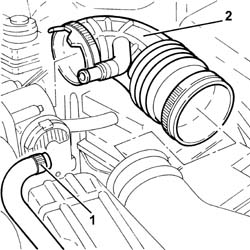
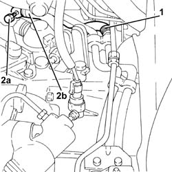
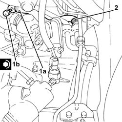
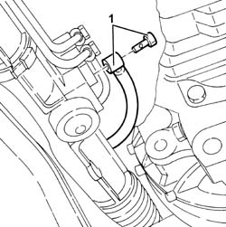
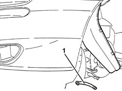
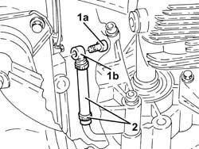
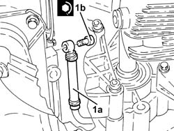

4130B72 Return PIPE from POWER ASSISTED STEERING BOX to INTERMEDIATE PIPE - R.R.
- Path
- Procedures > 41 STEERING > 4130 POWER ASSISTED STEERING > 4130B power steering hydraulic sytem > 4130B72 Return PIPE from POWER ASSISTED STEERING BOX to INTERMEDIATE PIPE - R.R.
- Kind
- repair procedure (removal / refitting; the operation number is the code)
- Applies to
- engines: 3.2 V6, 1.9 JTD 8v , 2.4 JTD 10v, 2.4 JTD 20v; all production periods
- Interactive page
- https://sloeber94.github.io/elrnDB-a156/en/#/3238147
Applies to: engines: 3.2 V6; all production periods
 Removing
Removing
 Refitting
RefittingPosition the vehicle on the ramp
Proceed with removal 7055B54 under-engine guard - r r .
1. Loosen the band and disconnect the right cylinder head oil vapour recirculation pipe from the hose between the resonator and the throttle casing.
2. Loosen the bands and remove the hose between resonator and throttle body.

Applies to: engines: 3.2 V6; all production periods
Proceed with removal 5530B10 battery - r+r .
Proceed with removal 5530B52 Battery DRIP TRAY/SUPPORT - R.R. .
1. Loosen the band and disconnect the return pipe from the power assisted steering box to the intermediate pipe, rigid intermediate pipe side.
2. Undo the connector (2a), disconnect the return pipe from the power assisted steering box to the intermediate pipe (2b), power assisted steering box side, and remove it.

Applies to: engines: 3.2 V6; all production periods
Refitting
Removing1. Place the return pipe from power steering box to the intermediate pipe (1a) back in its housing, connect it to the power steering box and secure by tightening the connector (1b) to the specified torque.
 | Fastening | Component | Ø | Value (daNm) |
|---|---|---|---|---|
1b | Connector | POWER STEERING/EXCHANGE BOX RUBBER HOSE | M12 | (Power steering box side) 2.8 - 3.2 |
2. Connect the return pipe from the power assisted steering box to the intermediate pipe, rigid intermediate pipe side, and tighten the band.

Applies to: engines: 3.2 V6; all production periods
Proceed with refitting 5530B52 Battery DRIP TRAY/SUPPORT - R.R. .
Proceed with refitting 5530B10 battery - r+r .
Place the hose between the resonator and the throttle casing back in its housing and tighten the bands.
Connect the right cylinder head oil vapour recirculation pipe to the hose between the resonator and the throttle casing and tighten the band.
Proceed with refitting 7055B54 under-engine guard - r r .
Fill the power steering circuit with the recommended fluid.
 | Type | Component | Name | Qty. |
|---|---|---|---|---|
- | Fluid [l] | HYDRAULIC POWER ASSISTED STEERING SYSTEM | TUTELA GI/A | 1.2 |
Bleed the power steering system as described below
With the front wheels raised off the ground, with the engine switched off turn the steering wheel to full lock, left and right, 4-5 times.
Check and, if necessary, top up the fluid level in the reservoir.
Remove the car from the ramps.
Start the engine and carry out 4 - 5 full steering wheel turn cycles (right and left).
Top up the fluid level in the reservoir.
Applies to: engines: 1.9 JTD 8v , 2.4 JTD 10v; all production periods
Removing
RefittingPosition the vehicle on the ramp
Drain the power steering fluid from the reservoir using a suitable syringe.
5530B52 Battery DRIP TRAY/SUPPORT - R.R.
4450B10 Front WHEEL (one) - R.R.
7055B64 Engine compartment DUST shield in front wheel arch (one), left or right - R.R.
Pull up the left front wheel arch partly
1008A42 gear box left rigid mount - r r
1008B30 gearbox side mount flexible block - replace
1076B50 exhaust pipe attachment to engine - r + r
1. Disconnect the rubber return pipe from the power steering box to the rigid pipe on the steering box side.

Applies to: engines: 1.9 JTD 8v , 2.4 JTD 10v; all production periods
1. Disconnect and remove the rubber return pipe from power steering box to the rigid pipe on the rigid pipe side.

Applies to: engines: 1.9 JTD 8v , 2.4 JTD 10v; all production periods
Refitting
RemovingFit and connect the rubber return pipe from power steering box to the rigid pipe on the rigid pipe side.
Connect the rubber return pipe from the power steering box to the rigid pipe on the steering box side and secure by tightening to torque.
| Fastening | Component | Ø | Value (daNm) |
|---|---|---|---|---|
- | Connector | POWER STEERING/EXCHANGE BOX RUBBER HOSE | M12 | 2.8 - 3.2 |
1076B50 exhaust pipe attachment to engine - r + r
1008B30 gearbox side mount flexible block - replace
1008A42 gear box left rigid mount - r r
Refit the left front wheel arch in its housing and secure.
7055B64 Engine compartment DUST shield in front wheel arch (one), left or right - R.R.
4450B10 Front WHEEL (one) - R.R.
5530B52 Battery DRIP TRAY/SUPPORT - R.R.
Fill the power steering circuit with the recommended fluid.
| Type | Component | Name | Qty. |
|---|---|---|---|---|
- | Fluid | POWER ASSISTED STEERING CIRCUIT | TUTELA GI/A | - |
Bleed the power steering system as described below
With the front wheels raised off the ground, with the engine switched off turn the steering wheel to full lock, left and right, 4-5 times.
Check and, if necessary, top up the fluid level in the reservoir.
Position the vehicle on the ground and start up the engine.
Carry out 4 - 5 complete steering wheel rotation cycles (right and left).
Top up the fluid level in the reservoir.
Applies to: engines: 2.4 JTD 20v; all production periods
Removing
RefittingPosition the vehicle on the ramp
Drain the power steering fluid from the reservoir using a suitable syringe.
Proceed with removal 1016A10 sound-proofing cover - r + r .
Proceed with removal 5530B10 battery - r+r .
Proceed with removal 5530B52 Battery DRIP TRAY/SUPPORT - R.R. .
Proceed with removal 4450B02 left front wheel r r .
Proceed with removal - 7055B90 Left front WHEEL ARCH LINER - R.R. .
Proceed with removal 7055B54 under-engine guard - r r .
Proceed with removal 1048B14 air delivery pipe between turbo charger and heat exchanger - replace .
Proceed with removal 1008A42 gear box left rigid mount - r r .
Proceed with removal 1008B30 gearbox side mount flexible block - replace .
Proceed with removal 1076B70 exhaust pipe between pre-catalytic converter and catalytic converter - r r .
1. Undo the connector (1a) and disconnect the rubber return pipe from the power assisted steering box to the rigid pipe (1b), power assisted steering box side.
2. Looen the band and disconnect the rubber return pipe from the power assisted steering box to the rigid pipe and remove it.

Applies to: engines: 2.4 JTD 20v; all production periods
Refitting
RemovingPlace the rubber return pipe from the power assisted steering box to the rigid pipe back in its housing, connect it to the rigid pipe and tighten the band.
1. Connect the rubber return pipe from power steering box to rigid pipe (1a) power steering box side and secure by tightening fitting (1b) to the specified torque.
| Fastening | Component | Ø | Value (daNm) |
|---|---|---|---|---|
1b | Connector | POWER STEERING/EXCHANGE BOX RUBBER HOSE | M12 | (Power steering box side) 2.7 ÷ 3.3 |

Applies to: engines: 2.4 JTD 20v; all production periods
Proceed with refitting 1076B70 exhaust pipe between pre-catalytic converter and catalytic converter - r r .
Proceed with refitting 1008B30 gearbox side mount flexible block - replace .
Proceed with refitting 1008A42 gear box left rigid mount - r r .
Proceed with refitting 1048B14 air delivery pipe between turbo charger and heat exchanger - replace .
Proceed with refitting 7055B54 under-engine guard - r r .
Proceed with refitting - 7055B90 Left front WHEEL ARCH LINER - R.R. .
Proceed with refitting 4450B02 left front wheel r r .
Proceed with refitting 5530B52 Battery DRIP TRAY/SUPPORT - R.R. .
Proceed with refitting 5530B10 battery - r+r .
Proceed with refitting 1016A10 sound-proofing cover - r + r .
Fill the power steering circuit with the recommended fluid.
| Type | Component | Name | Qty. |
|---|---|---|---|---|
- | Fluid | HYDRAULIC POWER ASSISTED STEERING SYSTEM | TUTELA GI/A | 1.3 |
Bleed the power steering system as described below
With the front wheels raised off the ground, with the engine switched off turn the steering wheel to full lock, left and right, 4-5 times.
Check and, if necessary, top up the fluid level in the reservoir.
Remove the car from the ramps.
Start the engine and carry out 4 - 5 full steering wheel turn cycles (right and left).
Top up the fluid level in the reservoir.
Topics linked from this page (12)
- 1008A42 gear box left rigid mount - r r
- 1008B30 gearbox side mount flexible block - replace
- 1016A10 sound-proofing cover - r + r
- 1048B14 air delivery pipe between turbo charger and heat exchanger - replace
- 1076B50 exhaust pipe attachment to engine - r + r
- 1076B70 exhaust pipe between pre-catalytic converter and catalytic converter - r r
- 4450B02 left front wheel r r
- 4450B10 Front WHEEL (one) - R.R.
- 5530B10 battery - r+r
- 5530B52 Battery DRIP TRAY/SUPPORT - R.R.
- 7055B54 under-engine guard - r r
- 7055B64 Engine compartment DUST shield in front wheel arch (one), left or right - R.R.